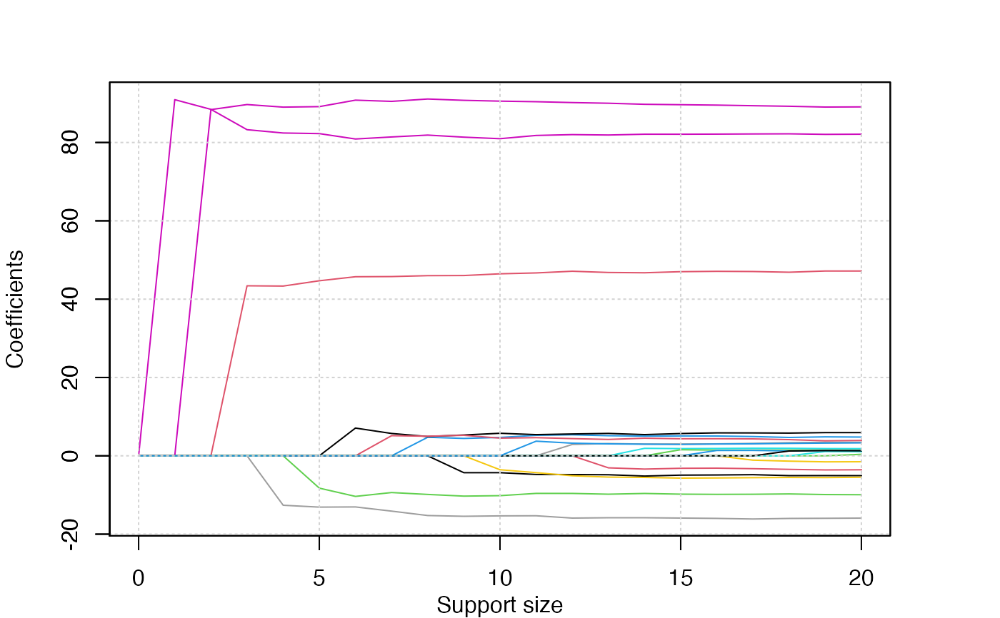
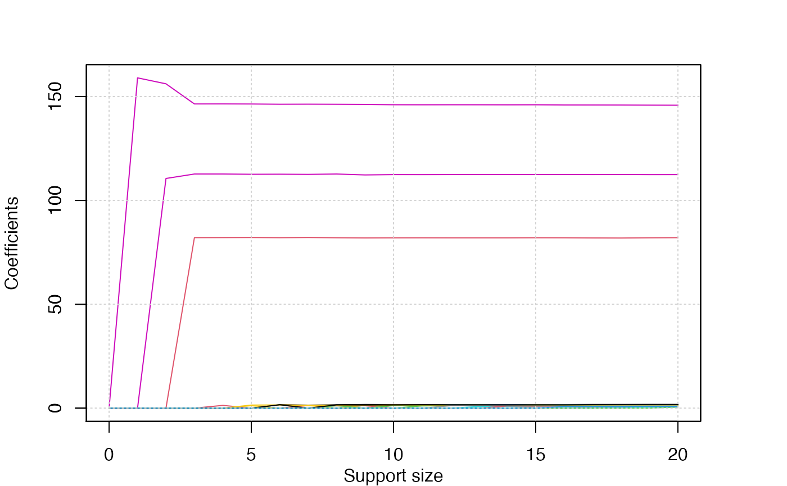
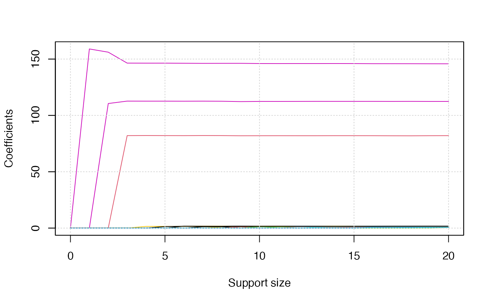

Adaptive best-subset selection for regression, (multi-class) classification, counting-response, censored-response, positive response, multi-response modeling in polynomial times.
# S3 method for default
abess(
x,
y,
family = c("gaussian", "binomial", "poisson", "cox", "mgaussian", "multinomial",
"gamma", "ordinal"),
tune.path = c("sequence", "gsection"),
tune.type = c("gic", "ebic", "bic", "aic", "cv"),
weight = NULL,
normalize = NULL,
c.max = 2,
support.size = NULL,
gs.range = NULL,
lambda = 0,
always.include = NULL,
group.index = NULL,
init.active.set = NULL,
splicing.type = 2,
max.splicing.iter = 20,
screening.num = NULL,
important.search = NULL,
warm.start = TRUE,
nfolds = 5,
foldid = NULL,
cov.update = FALSE,
newton = c("exact", "approx"),
newton.thresh = 1e-06,
max.newton.iter = NULL,
early.stop = FALSE,
ic.scale = 1,
num.threads = 0,
seed = 1,
...
)
# S3 method for formula
abess(formula, data, subset, na.action, ...)Input matrix, of dimension \(n \times p\); each row is an observation
vector and each column is a predictor/feature/variable.
Can be in sparse matrix format (inherit from class "dgCMatrix" in package Matrix).
The response variable, of n observations.
For family = "binomial" should have two levels.
For family="poisson", y should be a vector with positive integer.
For family = "cox", y should be a Surv object returned
by the survival package (recommended) or
a two-column matrix with columns named "time" and "status".
For family = "mgaussian", y should be a matrix of quantitative responses.
For family = "multinomial" or "ordinal", y should be a factor of at least three levels.
Note that, for either "binomial", "ordinal" or "multinomial",
if y is presented as a numerical vector, it will be coerced into a factor.
One of the following models:
"gaussian" (continuous response),
"binomial" (binary response),
"poisson" (non-negative count),
"cox" (left-censored response),
"mgaussian" (multivariate continuous response),
"multinomial" (multi-class response),
"ordinal" (multi-class ordinal response),
"gamma" (positive continuous response).
Depending on the response. Any unambiguous substring can be given.
The method to be used to select the optimal support size. For
tune.path = "sequence", we solve the best subset selection problem for each size in support.size.
For tune.path = "gsection", we solve the best subset selection problem with support size ranged in gs.range,
where the specific support size to be considered is determined by golden section.
The type of criterion for choosing the support size.
Available options are "gic", "ebic", "bic", "aic" and "cv".
Default is "gic".
Observation weights. When weight = NULL,
we set weight = 1 for each observation as default.
Options for normalization.
normalize = 0 for no normalization.
normalize = 1 for subtracting the means of the columns of x and y, and also
normalizing the columns of x to have \(\sqrt n\) norm.
normalize = 2 for subtracting the mean of columns of x and
scaling the columns of x to have \(\sqrt n\) norm.
normalize = 3 for scaling the columns of x to have \(\sqrt n\) norm.
If normalize = NULL, normalize will be set 1 for "gaussian" and "mgaussian",
3 for "cox". Default is normalize = NULL.
an integer splicing size. Default is: c.max = 2.
An integer vector representing the alternative support sizes.
Only used for tune.path = "sequence". Default is 0:min(n, round(n/(log(log(n))log(p)))).
A integer vector with two elements.
The first element is the minimum model size considered by golden-section,
the later one is the maximum one. Default is gs.range = c(1, min(n, round(n/(log(log(n))log(p))))).
A single lambda value for regularized best subset selection. Default is 0.
An integer vector containing the indexes of variables that should always be included in the model.
A vector of integers indicating the which group each variable is in.
For variables in the same group, they should be located in adjacent columns of x
and their corresponding index in group.index should be the same.
Denote the first group as 1, the second 2, etc.
If you do not fit a model with a group structure,
please set group.index = NULL (the default).
A vector of integers indicating the initial active set.
Default: init.active.set = NULL.
Optional type for splicing.
If splicing.type = 1, the number of variables to be spliced is
c.max, ..., 1; if splicing.type = 2,
the number of variables to be spliced is c.max, c.max/2, ..., 1.
(Default: splicing.type = 2.)
The maximum number of performing splicing algorithm.
In most of the case, only a few times of splicing iteration can guarantee the convergence.
Default is max.splicing.iter = 20.
An integer number. Preserve screening.num number of predictors with the largest
marginal maximum likelihood estimator before running algorithm.
An integer number indicating the number of
important variables to be splicing.
When important.search \(\ll\) p variables,
it would greatly reduce runtimes. Default: important.search = 128.
Whether to use the last solution as a warm start. Default is warm.start = TRUE.
The number of folds in cross-validation. Default is nfolds = 5.
an optional integer vector of values between 1, ..., nfolds identifying what fold each observation is in.
The default foldid = NULL would generate a random foldid.
A logical value only used for family = "gaussian". If cov.update = TRUE,
use a covariance-based implementation; otherwise, a naive implementation.
The naive method is more computational efficient than covariance-based method when \(p >> n\) and important.search is much large than its default value.
Default: cov.update = FALSE.
A character specify the Newton's method for fitting generalized linear models,
it should be either newton = "exact" or newton = "approx".
If newton = "exact", then the exact hessian is used,
while newton = "approx" uses diagonal entry of the hessian,
and can be faster (especially when family = "cox").
a numeric value for controlling positive convergence tolerance.
The Newton's iterations converge when \(|dev - dev_{old}|/(|dev| + 0.1)<\) newton.thresh.
a integer giving the maximal number of Newton's iteration iterations.
Default is max.newton.iter = 10 if newton = "exact", and max.newton.iter = 60 if newton = "approx".
A boolean value decide whether early stopping.
If early.stop = TRUE, algorithm will stop if the last tuning value less than the existing one.
Default: early.stop = FALSE.
A non-negative value used for multiplying the penalty term
in information criterion. Default: ic.scale = 1.
An integer decide the number of threads to be
concurrently used for cross-validation (i.e., tune.type = "cv").
If num.threads = 0, then all of available cores will be used.
Default: num.threads = 0.
Seed to be used to divide the sample into cross-validation folds.
Default is seed = 1.
further arguments to be passed to or from methods.
an object of class "formula":
a symbolic description of the model to be fitted.
The details of model specification are given in the "Details" section of "formula".
a data frame containing the variables in the formula.
an optional vector specifying a subset of observations to be used.
a function which indicates
what should happen when the data contain NAs.
Defaults to getOption("na.action").
A S3 abess class object, which is a list with the following components:
A \(p\)-by-length(support.size) matrix of coefficients for univariate family, stored in column format;
while a list of length(support.size) coefficients matrix (with size \(p\)-by-ncol(y)) for multivariate family.
An intercept vector of length length(support.size) for univariate family;
while a list of length(support.size) intercept vector (with size ncol(y)) for multivariate family.
the deviance of length length(support.size).
A value of tuning criterion of length length(support.size).
The number of sample used for training.
The number of variables used for training.
Type of the model.
The path type for tuning parameters.
The actual support.size values used.
Note that it is not necessary the same as the input
if the later have non-integer values or duplicated values.
The effective degree of freedom.
It is the same as support.size when lambda = 0.
The best support size selected by the tuning value.
The criterion type for tuning parameters.
The strategy for tuning parameters.
The character vector specify the feature
selected by feature screening.
It would be an empty character vector if screening.num = 0.
The original call to abess.
Best-subset selection aims to find a small subset of predictors,
so that the resulting model is expected to have the most desirable prediction accuracy.
Best-subset selection problem under the support size \(s\) is
$$\min_\beta -2 \log L(\beta) \;\;{\rm s.t.}\;\; \|\beta\|_0 \leq s,$$
where \(L(\beta)\) is arbitrary convex functions. In
the GLM case, \(\log L(\beta)\) is the log-likelihood function; in the Cox
model, \(\log L(\beta)\) is the log partial-likelihood function.
The best subset selection problem is solved by the splicing algorithm in this package, see Zhu (2020) for details.
Under mild conditions, the algorithm exactly solve this problem in polynomial time.
This algorithm exploits the idea of sequencing and splicing to reach a stable solution in finite steps when \(s\) is fixed.
The parameters c.max, splicing.type and max.splicing.iter allow user control the splicing technique flexibly.
On the basis of our numerical experiment results, we assign properly parameters to the these parameters as the default
such that the precision and runtime are well balanced, we suggest users keep the default values unchanged.
Please see this online page for more details about the splicing algorithm.
To find the optimal support size \(s\),
we provide various criterion like GIC, AIC, BIC and cross-validation error to determine it.
More specifically, the sequence of models implied by support.size are fit by the splicing algorithm.
And the solved model with least information criterion or cross-validation error is the optimal model.
The sequential searching for the optimal model is somehow time-wasting.
A faster strategy is golden section (GS), which only need to specify gs.range.
More details about GS is referred to Zhang et al (2021).
It is worthy to note that the parameters newton, max.newton.iter and newton.thresh allows
user control the parameter estimation in non-guassian models.
The parameter estimation procedure use Newton method or approximated Newton method (only consider the diagonal elements in the Hessian matrix).
Again, we suggest to use the default values unchanged because the same reason for the parameter c.max.
abess support some well-known advanced statistical methods to analyze data, including
sure independent screening: helpful for ultra-high dimensional predictors (i.e., \(p \gg n\)). Use the parameter screening.num to retain the marginally most important predictors. See Fan et al (2008) for more details.
best subset of group selection: helpful when predictors have group structure. Use the parameter group.index to specify the group structure of predictors. See Zhang et al (2021) for more details.
\(l_2\) regularization best subset selection: helpful when signal-to-ratio is relatively small. Use the parameter lambda to control the magnitude of the regularization term.
nuisance selection: helpful when the prior knowledge of important predictors is available. Use the parameter always.include to retain the important predictors.
The arbitrary combination of the four methods are definitely support.
Please see online vignettes for more details about the advanced features support by abess.
A polynomial algorithm for best-subset selection problem. Junxian Zhu, Canhong Wen, Jin Zhu, Heping Zhang, Xueqin Wang. Proceedings of the National Academy of Sciences Dec 2020, 117 (52) 33117-33123; doi: 10.1073/pnas.2014241117
Certifiably Polynomial Algorithm for Best Group Subset Selection. Zhang, Yanhang, Junxian Zhu, Jin Zhu, and Xueqin Wang (2021). arXiv preprint arXiv:2104.12576.
abess: A Fast Best Subset Selection Library in Python and R. Jin Zhu, Liyuan Hu, Junhao Huang, Kangkang Jiang, Yanhang Zhang, Shiyun Lin, Junxian Zhu, Xueqin Wang (2021). arXiv preprint arXiv:2110.09697.
Sure independence screening for ultrahigh dimensional feature space. Fan, J. and Lv, J. (2008), Journal of the Royal Statistical Society: Series B (Statistical Methodology), 70: 849-911. doi: 10.1111/j.1467-9868.2008.00674.x
Targeted Inference Involving High-Dimensional Data Using Nuisance Penalized Regression. Qiang Sun & Heping Zhang (2020). Journal of the American Statistical Association, doi: 10.1080/01621459.2020.1737079
# \donttest{
library(abess)
n <- 100
p <- 20
support.size <- 3
################ linear model ################
dataset <- generate.data(n, p, support.size)
abess_fit <- abess(dataset[["x"]], dataset[["y"]])
## helpful generic functions:
print(abess_fit)
#> Call:
#> abess.default(x = dataset[["x"]], y = dataset[["y"]])
#>
#> support.size dev GIC
#> 1 0 8902.8419 909.4126
#> 2 1 5081.6351 857.9139
#> 3 2 2203.6977 778.9392
#> 4 3 921.3726 696.3115
#> 5 4 833.5074 690.8643
#> 6 5 797.0079 690.9616
#> 7 6 771.9370 692.3404
#> 8 7 759.3075 695.2658
#> 9 8 750.0559 698.6149
#> 10 9 743.0171 702.2471
#> 11 10 736.8746 705.9920
#> 12 11 730.2053 709.6578
#> 13 12 726.1450 713.6752
#> 14 13 722.1120 717.6933
#> 15 14 719.8878 721.9598
#> 16 15 718.7611 726.3782
#> 17 16 717.9167 730.8357
#> 18 17 717.2695 735.3205
#> 19 18 716.6929 739.8151
#> 20 19 716.1755 744.3179
#> 21 20 716.1127 748.8842
coef(abess_fit, support.size = 3)
#> 21 x 1 sparse Matrix of class "dgCMatrix"
#> 3
#> (intercept) -4.369861
#> x1 .
#> x2 .
#> x3 .
#> x4 .
#> x5 .
#> x6 83.270800
#> x7 .
#> x8 .
#> x9 .
#> x10 .
#> x11 .
#> x12 .
#> x13 .
#> x14 89.689944
#> x15 .
#> x16 .
#> x17 .
#> x18 43.410846
#> x19 .
#> x20 .
predict(abess_fit,
newx = dataset[["x"]][1:10, ],
support.size = c(3, 4)
)
#> 3 4
#> [1,] 103.05157 91.524774
#> [2,] 74.66998 85.359664
#> [3,] -289.97309 -299.858907
#> [4,] -16.35758 -4.241221
#> [5,] 171.80572 162.807112
#> [6,] 126.58540 127.021354
#> [7,] -197.24366 -207.134508
#> [8,] -126.67823 -142.927367
#> [9,] -23.29128 -22.898065
#> [10,] -109.76937 -117.273626
str(extract(abess_fit, 3))
#> List of 7
#> $ beta :Formal class 'dgCMatrix' [package "Matrix"] with 6 slots
#> .. ..@ i : int [1:3] 5 13 17
#> .. ..@ p : int [1:2] 0 3
#> .. ..@ Dim : int [1:2] 20 1
#> .. ..@ Dimnames:List of 2
#> .. .. ..$ : chr [1:20] "x1" "x2" "x3" "x4" ...
#> .. .. ..$ : chr "3"
#> .. ..@ x : num [1:3] 83.3 89.7 43.4
#> .. ..@ factors : list()
#> $ intercept : num -4.37
#> $ support.size: num 3
#> $ support.vars: chr [1:3] "x6" "x14" "x18"
#> $ support.beta: num [1:3] 83.3 89.7 43.4
#> $ dev : num 921
#> $ tune.value : num 696
deviance(abess_fit)
#> [1] 8902.8419 5081.6351 2203.6977 921.3726 833.5074 797.0079 771.9370
#> [8] 759.3075 750.0559 743.0171 736.8746 730.2053 726.1450 722.1120
#> [15] 719.8878 718.7611 717.9167 717.2695 716.6929 716.1755 716.1127
plot(abess_fit)

plot(abess_fit, type = "tune")

################ logistic model ################
dataset <- generate.data(n, p, support.size, family = "binomial")
## allow cross-validation to tuning
abess_fit <- abess(dataset[["x"]], dataset[["y"]],
family = "binomial", tune.type = "cv"
)
abess_fit
#> Call:
#> abess.default(x = dataset[["x"]], y = dataset[["y"]], family = "binomial",
#> tune.type = "cv")
#>
#> support.size dev cv
#> 1 0 68.5929800 13.888785
#> 2 1 46.6936375 9.467560
#> 3 2 22.3141723 4.795585
#> 4 3 17.6033381 5.453335
#> 5 4 16.8661842 9.347666
#> 6 5 16.1567523 14.282256
#> 7 6 15.1607580 22.107111
#> 8 7 14.1855477 35.095224
#> 9 8 13.0670040 43.926821
#> 10 9 11.4615489 53.691742
#> 11 10 12.1851489 60.759908
#> 12 11 11.0784505 68.700947
#> 13 12 8.7759571 77.903923
#> 14 13 6.5407658 86.853208
#> 15 14 3.3094079 90.817114
#> 16 15 1.3027225 97.754214
#> 17 16 0.9140813 98.113320
#> 18 17 0.4831899 97.639211
#> 19 18 0.1321514 97.451196
#> 20 19 0.1790295 97.418885
#> 21 20 2.0997138 97.608781
################ poisson model ################
dataset <- generate.data(n, p, support.size, family = "poisson")
abess_fit <- abess(dataset[["x"]], dataset[["y"]],
family = "poisson", tune.type = "cv"
)
abess_fit
#> Call:
#> abess.default(x = dataset[["x"]], y = dataset[["y"]], family = "poisson",
#> tune.type = "cv")
#>
#> support.size dev cv
#> 1 0 44.95340 10.19365
#> 2 1 -31.62397 3.28437
#> 3 2 -100.57515 -10.57295
#> 4 3 -157.18472 -30.45472
#> 5 4 -160.75596 -31.01768
#> 6 5 -163.01916 -30.63952
#> 7 6 -164.82977 -30.13028
#> 8 7 -166.39686 -26.74170
#> 9 8 -167.33059 -27.33824
#> 10 9 -168.30048 -27.42207
#> 11 10 -168.98526 -27.25689
#> 12 11 -169.76250 -26.64814
#> 13 12 -170.25995 -27.38532
#> 14 13 -171.31745 -28.11082
#> 15 14 -171.54370 -28.38131
#> 16 15 -171.74975 -28.63372
#> 17 16 -171.85325 -28.85538
#> 18 17 -171.91807 -28.35201
#> 19 18 -171.94049 -28.14750
#> 20 19 -171.94879 -27.96317
#> 21 20 -171.95952 -27.89898
################ Cox model ################
dataset <- generate.data(n, p, support.size, family = "cox")
abess_fit <- abess(dataset[["x"]], dataset[["y"]],
family = "cox", tune.type = "cv"
)
################ Multivariate gaussian model ################
dataset <- generate.data(n, p, support.size, family = "mgaussian")
abess_fit <- abess(dataset[["x"]], dataset[["y"]],
family = "mgaussian", tune.type = "cv"
)
plot(abess_fit, type = "l2norm")

################ Multinomial model (multi-classification) ################
dataset <- generate.data(n, p, support.size, family = "multinomial")
abess_fit <- abess(dataset[["x"]], dataset[["y"]],
family = "multinomial", tune.type = "cv"
)
predict(abess_fit,
newx = dataset[["x"]][1:10, ],
support.size = c(3, 4), type = "response"
)
#> $`3`
#> 1 2
#> [1,] 3.195016e-01 6.796457e-01 8.526170e-04
#> [2,] 9.926804e-01 2.440772e-07 7.319345e-03
#> [3,] 1.994464e-08 1.143640e-05 9.999885e-01
#> [4,] 1.922589e-09 1.000000e+00 1.508267e-08
#> [5,] 9.983970e-01 1.644070e-08 1.602938e-03
#> [6,] 4.380697e-01 4.031366e-01 1.587937e-01
#> [7,] 1.752322e-05 6.737499e-01 3.262325e-01
#> [8,] 1.397247e-06 9.834317e-01 1.656692e-02
#> [9,] 2.634463e-04 1.642882e-01 8.354483e-01
#> [10,] 5.926381e-03 2.231758e-07 9.940734e-01
#>
#> $`4`
#> 1 2
#> [1,] 1.483046e-01 8.516877e-01 7.775864e-06
#> [2,] 9.997506e-01 1.127507e-06 2.483045e-04
#> [3,] 5.751059e-11 3.022517e-09 1.000000e+00
#> [4,] 3.633755e-11 1.000000e+00 7.527286e-13
#> [5,] 9.911478e-01 5.630004e-10 8.852224e-03
#> [6,] 5.815429e-01 1.173098e-01 3.011473e-01
#> [7,] 3.581717e-06 2.443244e-02 9.755640e-01
#> [8,] 9.683075e-07 9.846617e-01 1.533729e-02
#> [9,] 2.219998e-04 7.084179e-01 2.913601e-01
#> [10,] 2.934310e-03 1.071389e-07 9.970656e-01
#>
################ Ordinal regression ################
dataset <- generate.data(n, p, support.size, family = "ordinal", class.num = 4)
abess_fit <- abess(dataset[["x"]], dataset[["y"]],
family = "ordinal", tune.type = "cv"
)
coef <- coef(abess_fit, support.size = abess_fit[["best.size"]])[[1]]
predict(abess_fit,
newx = dataset[["x"]][1:10, ],
support.size = c(3, 4), type = "response"
)
#> $`3`
#> 1 2 3
#> [1,] 4.262225e-05 1.829633e-02 9.726829e-01 8.978109e-03
#> [2,] 7.882173e-01 2.111701e-01 6.125573e-04 1.037531e-07
#> [3,] 1.486210e-05 6.456936e-03 9.682043e-01 2.532388e-02
#> [4,] 1.577722e-10 6.899165e-08 4.083410e-04 9.995916e-01
#> [5,] 9.999979e-01 2.067605e-06 4.727471e-09 8.002488e-13
#> [6,] 9.966919e-01 3.300482e-03 7.571409e-06 1.281646e-09
#> [7,] 8.368720e-10 3.659527e-07 2.162164e-03 9.978375e-01
#> [8,] 4.271390e-07 1.867472e-04 5.250122e-01 4.748006e-01
#> [9,] 8.728258e-01 1.268418e-01 3.322732e-04 5.626364e-08
#> [10,] 2.426574e-02 8.916995e-01 8.401922e-02 1.552701e-05
#>
#> $`4`
#> 1 2 3
#> [1,] 2.718879e-07 1.668930e-03 9.974270e-01 9.038274e-04
#> [2,] 9.222029e-01 7.778339e-02 1.371784e-05 2.074940e-11
#> [3,] 2.028760e-07 1.245842e-03 9.975430e-01 1.210908e-03
#> [4,] 4.080690e-15 2.509040e-11 1.659043e-05 9.999834e-01
#> [5,] 1.000000e+00 2.518530e-09 4.096723e-13 0.000000e+00
#> [6,] 9.985539e-01 1.445840e-03 2.354909e-07 3.561595e-13
#> [7,] 1.450164e-14 8.916432e-11 5.895529e-05 9.999410e-01
#> [8,] 8.009007e-10 4.924368e-06 7.650435e-01 2.349516e-01
#> [9,] 8.676204e-01 1.323548e-01 2.481049e-05 3.752842e-11
#> [10,] 4.631050e-03 9.615982e-01 3.377066e-02 5.286555e-08
#>
########## Best group subset selection #############
dataset <- generate.data(n, p, support.size)
group_index <- rep(1:10, each = 2)
abess_fit <- abess(dataset[["x"]], dataset[["y"]], group.index = group_index)
str(extract(abess_fit))
#> List of 7
#> $ beta :Formal class 'dgCMatrix' [package "Matrix"] with 6 slots
#> .. ..@ i : int [1:8] 4 5 12 13 14 15 16 17
#> .. ..@ p : int [1:2] 0 8
#> .. ..@ Dim : int [1:2] 20 1
#> .. ..@ Dimnames:List of 2
#> .. .. ..$ : chr [1:20] "x1" "x2" "x3" "x4" ...
#> .. .. ..$ : chr "4"
#> .. ..@ x : num [1:8] 1.992 82.397 -0.735 88.545 -4.368 ...
#> .. ..@ factors : list()
#> $ intercept : num -4.07
#> $ support.size: int 4
#> $ support.vars: chr [1:8] "x5" "x6" "x13" "x14" ...
#> $ support.beta: num [1:8] 1.992 82.397 -0.735 88.545 -4.368 ...
#> $ dev : num 819
#> $ tune.value : num 699
################ Golden section searching ################
dataset <- generate.data(n, p, support.size)
abess_fit <- abess(dataset[["x"]], dataset[["y"]], tune.path = "gsection")
abess_fit
#> Call:
#> abess.default(x = dataset[["x"]], y = dataset[["y"]], tune.path = "gsection")
#>
#> support.size dev GIC
#> 1 3 921.3726 696.3115
#> 2 4 833.5074 690.8643
#> 3 5 797.0079 690.9616
#> 4 6 771.9370 692.3404
#> 5 8 750.0559 698.6149
#> 6 13 722.1120 717.6933
################ Feature screening ################
p <- 1000
dataset <- generate.data(n, p, support.size)
abess_fit <- abess(dataset[["x"]], dataset[["y"]],
screening.num = 100
)
str(extract(abess_fit))
#> List of 7
#> $ beta :Formal class 'dgCMatrix' [package "Matrix"] with 6 slots
#> .. ..@ i : int [1:3] 288 642 780
#> .. ..@ p : int [1:2] 0 3
#> .. ..@ Dim : int [1:2] 1000 1
#> .. ..@ Dimnames:List of 2
#> .. .. ..$ : chr [1:1000] "x1" "x2" "x3" "x4" ...
#> .. .. ..$ : chr "3"
#> .. ..@ x : num [1:3] 145.3 51.9 160.1
#> .. ..@ factors : list()
#> $ intercept : num 5.53
#> $ support.size: int 3
#> $ support.vars: chr [1:3] "x289" "x643" "x781"
#> $ support.beta: num [1:3] 145.3 51.9 160.1
#> $ dev : num 1821
#> $ tune.value : num 772
################ Sparse predictor ################
require(Matrix)
#> Loading required package: Matrix
p <- 1000
dataset <- generate.data(n, p, support.size)
dataset[["x"]][abs(dataset[["x"]]) < 1] <- 0
dataset[["x"]] <- Matrix(dataset[["x"]])
abess_fit <- abess(dataset[["x"]], dataset[["y"]])
str(extract(abess_fit))
#> List of 7
#> $ beta :Formal class 'dgCMatrix' [package "Matrix"] with 6 slots
#> .. ..@ i : int [1:2] 288 780
#> .. ..@ p : int [1:2] 0 2
#> .. ..@ Dim : int [1:2] 1000 1
#> .. ..@ Dimnames:List of 2
#> .. .. ..$ : chr [1:1000] "x1" "x2" "x3" "x4" ...
#> .. .. ..$ : chr "2"
#> .. ..@ x : num [1:2] 147 171
#> .. ..@ factors : list()
#> $ intercept : num -10.4
#> $ support.size: int 2
#> $ support.vars: chr [1:2] "x289" "x781"
#> $ support.beta: num [1:2] 147 171
#> $ dev : num 7266
#> $ tune.value : num 910
# }
# \donttest{
################ Formula interface ################
data("trim32")
abess_fit <- abess(y ~ ., data = trim32)
abess_fit
#> Call:
#> abess.formula(formula = y ~ ., data = trim32)
#>
#> support.size dev GIC
#> 1 0 0.010369311 -548.2686
#> 2 1 0.004088476 -650.2178
#> 3 2 0.002961921 -679.1658
#> 4 3 0.002560296 -686.9195
#> 5 4 0.002392097 -685.3417
#> 6 5 0.002392089 -675.6100
#> 7 6 0.002300641 -670.5554
#> 8 7 0.002295887 -661.0715
#> 9 8 0.002275372 -652.4165
#> 10 9 0.002275332 -642.6865
#> 11 10 0.002256348 -633.9598
#> 12 11 0.002243761 -624.8989
#> 13 12 0.002225414 -616.1521
# }